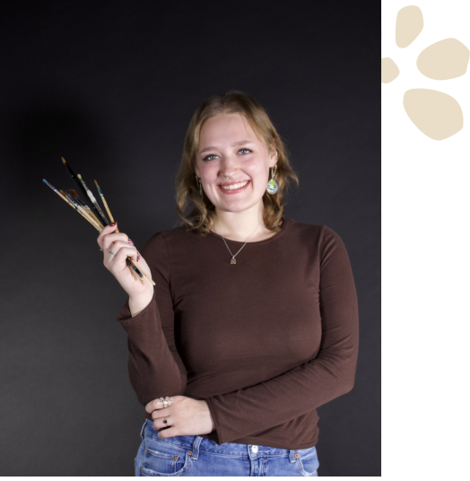

Biography

Aurora Geesey is a multidisciplinary artist from Stevens Point, Wisconsin. In 2026, she received her Bachelor of Art in Graphic Communications as well as a certificate in American Sign Language from the University of Wisconsin-Eau Claire. Geesey’s works have been featured in various exhibitions throughout Wisconsin. Her self-exploration painting titled In My Space was featured in the Ruth Foster Gallery’s Annual Juried Student Art Show and received a “Best In Show” honorable mention award. This work later became featured as the cover image for Eau Claire’s newspaper, Volume One. It then was displayed in the Davies Student Center of Eau Claire, Wisconsin. Currently, Geesey is seeking opportunities for commissioned projects, artist residences, and gallery exhibitions.